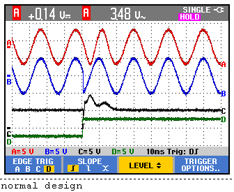

Design of a High-Performance High-Pass Generalized Integrator Based Single-Phase PLL
그리드 연계 전력 변환기의 동기화 성능을 극대화하기 위해 DC 오프셋을 원천 차단하는 고역통과 일반 적분기 기반 PLL이 제안됐어요.
왜 단상 PLL에서 DC 오프셋과 고조파가 이렇게 큰 문제가 될까요?
그리드 연계 전력 변환기는 태양광 인버터, UPS, 능동 전력 필터 등 다양한 응용 분야에서 사용되며, 이들 시스템은 그리드 전압에 정확히 동기화되어야 안정적으로 동작해요. 이 동기화를 담당하는 핵심 블록이 바로 PLL(Phase-Locked Loop)인데, PLL의 성능이 곧 시스템 전체의 전력 품질과 안정성을 결정짓는 중요한 요소예요. 특히 단상 시스템에서는 삼상 시스템과 달리 자연스러운 직교 신호 생성이 어렵기 때문에 별도의 신호 처리 구조가 필요해요.
실제 그리드 환경에서는 이상적인 정현파 대신 DC 오프셋, 고조파 왜곡, 주파수 편차 등 다양한 비이상적 조건이 혼재해요. DC 오프셋은 전류 센서의 드리프트나 A/D 변환기의 바이어스 오류 등에서 발생하며, PLL의 위상 추정에 직접적인 오류를 유발해요. 고조파 왜곡은 비선형 부하나 전력 전자 스위칭에 의해 생성되고, 주파수 편차는 그리드 불안정 상황에서 나타나며 이 세 가지 요인이 복합적으로 PLL 성능을 저하시켜요.
기존 SOGI(2차 일반 적분기) 기반 PLL은 직교 신호 생성 측면에서 우수하지만 DC 오프셋을 효과적으로 제거하지 못하는 구조적 한계를 가지고 있어요. DC 오프셋 제거를 위해 별도 필터를 추가하면 구현 복잡도와 연산 부하가 증가하여 저가형 디지털 컨트롤러에서의 실시간 구현이 어려워지는 딜레마가 존재해요.
어떻게 SOGI 구조를 수정하여 고역통과 특성과 DC 제거를 동시에 달성했을까요?
HGI-PLL은 기존 SOGI 구조에서 적분기 앞단의 신호 경로를 수정하여 고역통과 필터링 특성을 내재화하는 방식으로 설계됐어요. 구체적으로는 SOGI 피드백 루프 내의 적분 경로를 재구성하여 DC 성분이 자연스럽게 차단되도록 만들었으며, 이를 통해 별도의 DC 제거 필터 없이도 입력 DC 오프셋의 영향을 원천적으로 억제할 수 있어요. 이 수정된 구조는 고역통과 일반 적분기(HGI, High-Pass Generalized Integrator)라고 명명되었으며, 기존 SOGI 대비 추가 연산 블록 없이 DC 차단 기능을 구현해요.
설계 방법론 측면에서는 주파수 편차와 고조파 왜곡이 있는 비이상적 입력 조건에서도 단위 벡터 THD를 1% 이내로 유지하도록 하는 체계적인 파라미터 선정 절차가 제시됐어요. HGI-PLL은 고정 파라미터(fixed parameters) 구조를 채택하여 실시간 적응형 알고리즘이 필요하지 않으며, 이는 낮은 연산 복잡도를 의미해요. 루프 필터 설계와 HGI 이득 파라미터를 연계하여 과도 응답 속도와 정상 상태 왜곡 억제 성능 간의 최적 균형점을 체계적으로 도출하는 설계 플로우를 확립했어요.
SOGI의 구조적 변형만으로 DC 오프셋 차단 기능을 내재화함으로써, 기존 DC 오프셋 보상 SOGI-PLL 대비 가장 낮은 자원 활용도를 달성했어요. 고정 파라미터 설계와 체계적 설계 방법론의 결합은 저가형 디지털 컨트롤러에서도 고성능 PLL 구현을 가능하게 하는 실용적 혁신이에요.
HGI-PLL이 기존 SOGI 기반 PLL 대비 얼마나 우수한 성능을 실험적으로 증명했을까요?
실험 검증 결과, HGI-PLL은 DC 오프셋이 존재하는 조건에서 기존 SOGI-PLL 대비 단위 벡터 THD를 1% 이내로 유지하는 데 성공했으며, 이론적 예측과 실험 결과가 높은 일치도를 보였어요. 과도 응답 속도 측면에서는 DC 오프셋 차단 기능을 갖춘 SOGI 기반 PLL들 중 가장 빠른 위상 및 주파수 추종 응답을 달성했어요. 고조파 왜곡 및 주파수 편차가 복합적으로 존재하는 실제 그리드 모사 조건에서도 안정적인 동기화 성능을 유지함으로써 실용적 신뢰성을 입증했어요.
HBM 설계에 어떻게 적용할 수 있나요?
HBM 및 DRAM 회로 설계자 관점에서 이 논문은 클록 동기화와 위상 추종 회로 설계에 직접적인 시사점을 제공해요. HBM 인터페이스에서 사용되는 DLL(Delay-Locked Loop)이나 PLL은 전원 노이즈, 기판 커플링, 그리고 데이터 패턴에 의한 DC 오프셋 성분의 영향을 받을 수 있으며, 이를 필터링하는 구조적 접근법은 아날로그 프론트엔드 설계에 응용 가능해요. 특히 고속 HBM 인터페이스에서 채널 비이상성(ISI, 크로스토크, DC 드리프트)에 강인한 클록 복원 회로 설계 시 유사한 고역통과 필터 내재화 개념을 적용할 수 있어요.
반도체 회로 관점에서 HGI-PLL의 고정 파라미터 설계 철학은 디지털 구현 시 LUT(Look-Up Table)와 승산기 사용을 최소화하는 방향으로 매핑될 수 있어요. 이는 FPGA 기반 프로토타입 검증이나 ASIC 구현 시 면적과 전력 소모를 줄이는 데 유리하며, 저전력 IoT 엣지 디바이스의 클록 관리 회로에도 적용 가능한 설계 원칙이에요. 또한 체계적인 설계 방법론(THD 목표값 기반 파라미터 도출)은 반도체 PLL의 지터 목표 기반 설계 플로우와 개념적으로 유사하여 상호 참조할 수 있는 방법론적 가치가 있어요.
이 논문은 전력 시스템용 저주파(50/60Hz) 그리드 동기화를 타겟으로 하므로, GHz 대역 반도체 PLL/DLL에 직접 적용하기 위해서는 대역폭과 노이즈 특성 재설계가 필요해요. 또한 고정 파라미터 접근법은 설계 시점에 비이상적 조건의 범위를 사전 정의해야 하므로, 동작 환경이 크게 변화하는 HBM 시스템에서는 적응형 보정 메커니즘과의 결합을 추가로 검토해야 해요.
Figure 갤러리


